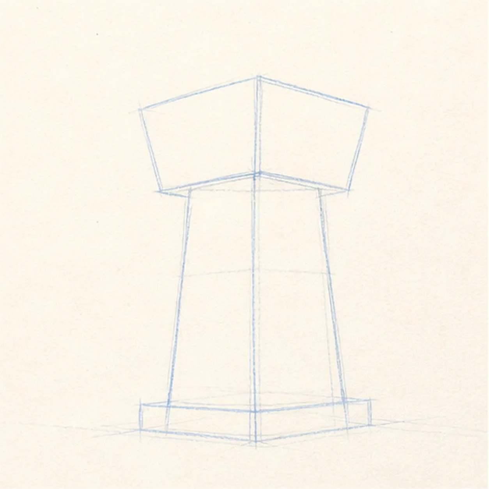
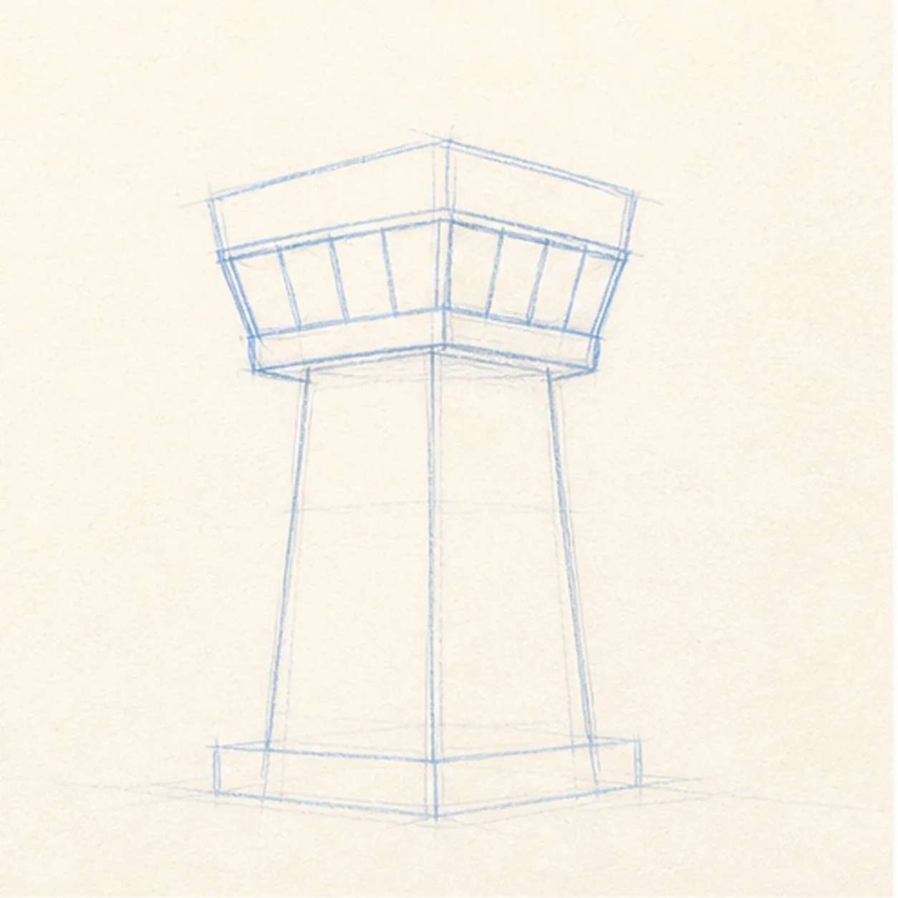
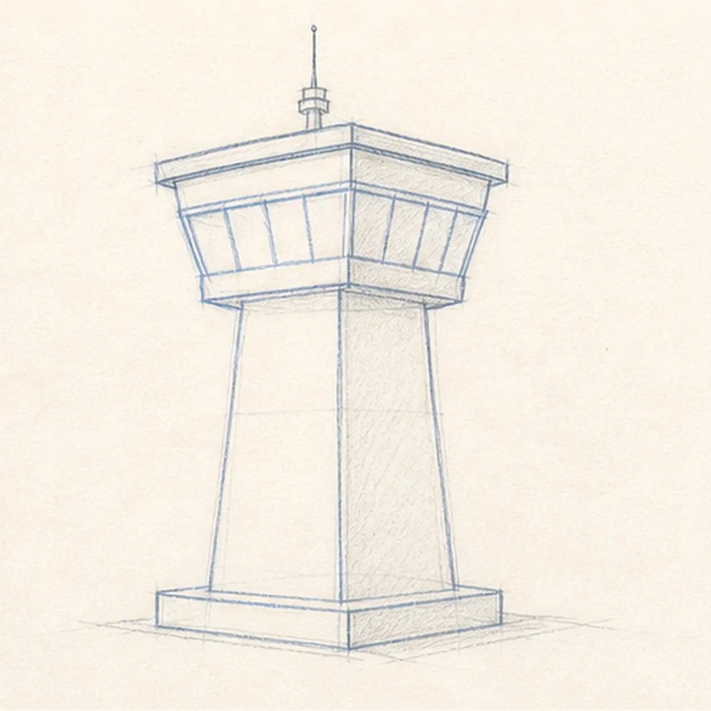
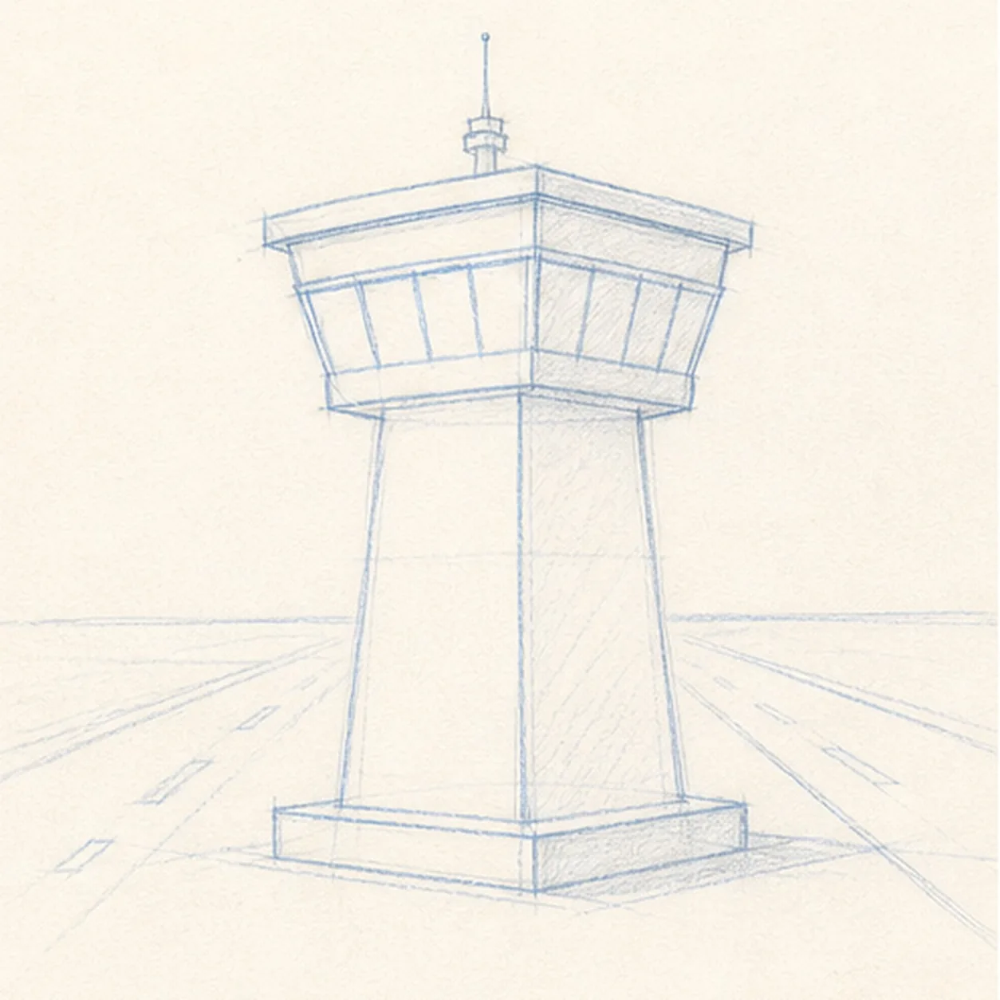
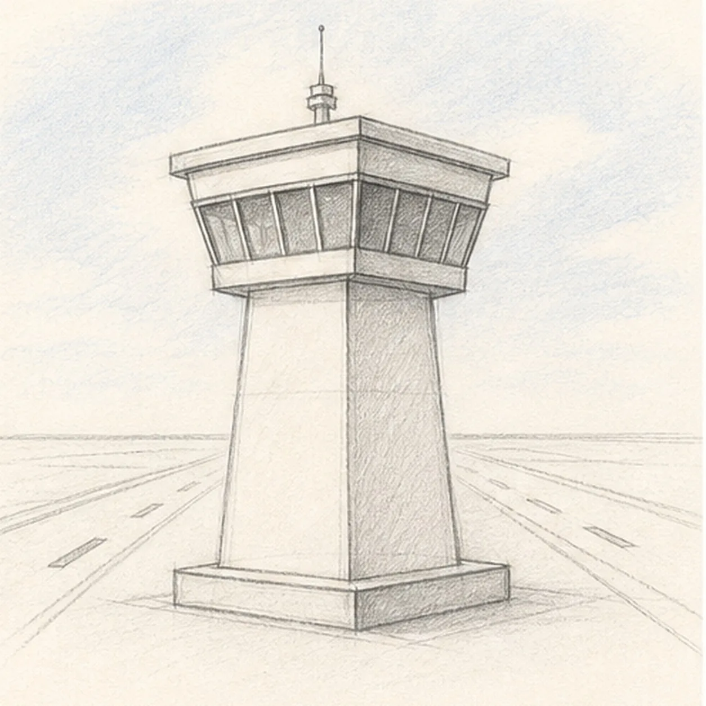

From the archive
Let's draw an airport control tower
Treat this as one small practice round: build the subject lightly, notice the shapes, then darken only the lines that help the finished sketch.
-
01

Stack the main forms
Draw a tall tapered shaft, then set a wider glass control cab on top with light construction lines.
Sketch tip: Keep the cab centered over the shaft. A tiny lean will make the whole tower feel unstable.
-
02

Wrap the windows
Add the slanted window band across the cab while keeping the same tower shaft underneath.
Sketch tip: Use a few large panes instead of many tiny ones. They will stay readable after shading.
-
03

Cap the tower
Add the cab roof, small antenna, and simple base platform without changing the main tower pose.
Sketch tip: Let the cap follow the cab's top edge. That small angle helps the tower feel three-dimensional.
-
04

Set the runway
Place light runway perspective marks behind the base so the tower feels grounded at the airport.
Sketch tip: Keep the runway marks simple. They should support the tower instead of becoming a detailed landscape.
-
05

Shade windows and sky
Add light blue-gray sky tint, soft graphite shadow on the shaft, and darker tones in the window panes.
Sketch tip: Shade around the window panes, not over all of them. Leaving pale glass makes the cab easier to read.
-
06
Finish the control tower sketch
Darken the keeper contours, clarify the panes, antenna, and runway marks, and deepen the existing blue-gray shading.
Sketch tip: Stop before adding lettering, signs, or extra vehicles. The tower shape and runway already carry the drawing.